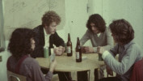

Coisa na roda
|  |
COISA NA RODA Foto por Giba Assis Brasil: Pedro Santos, Rudi Lagemann, Nilo Cruz e Carlos Grübber |
|
Quatro estudantes moram numa comunidade urbana, onde, em princípio, tudo pode ser "posto na roda", dividido, compartilhado: a mesada de cada um, os objetos pessoais, os relacionamentos, os compromissos políticos. Mas as coisas começam a mudar com a chegada de um quinto morador, mais velho e desiludido, que coloca em xeque a capacidade de cada um viver de acordo com suas idéias. |
|
Direção: Werner Schünemann
Roteiro: Werner Schünemann
Direção de Fotografia: Giba Assis Brasil
Direção de Produção: Rudi Lagemann
Montagem: Werner Schünemann e Giba Assis Brasil
Assistente de Direção: Giba Assis Brasil
Distribuição: Casa de Cinema PoA
Elenco Principal:
Rudi Lagemann (Guilherme)
Nilo Cruz (André)
Carlos Grübber (Lico)
Pedro Santos (Ricardo)
Marta Biavaschi (Sandra)
Sérgio Horst (Alfredo)
Beatriz Motta (Marta)
Prêmios
-
6º Festival Nacional de Cinema Super 8, Gramado, 1982:
Melhor Filme
Crítica
"O humor é dosado de forma inteligente, mas o que vale mesmo é o quase documentário reconstituído de um cotidiano que a gente conhece bem. A rigor, os atores não representam, mas simplesmente reproduzem frente à câmara coisas do seu dia a dia. E é isto que torna o filme fluido, leve, comunicativo, instigante."
(Goida, ZERO HORA, Porto Alegre, maio/82)"É claro que há um efeito nostálgico inevitável em COISA NA RODA, mesmo para quem não viveu naquele tempo e naquele lugar. Sendo o filme a expressão de uma experiência geracional, não podia ser de outra forma. São bichos-grilos que freqüentam aulas de teatro, namoram entre uma aula e outra, vivem em repúblicas de estudantes, participam do movimento estudantil, viajam de carona e acampam na serra gaúcha. O super-8, com a sua imagem precária, sem definição, suja e riscada, contribui para criar um efeito de filme doméstico, de documentário caseiro, feito entre amigos. É o registro de um modo de fazer que se perdeu. Mas, antes de tudo, é um documento de juventude, de um tempo em que ainda só havia energia e vontade, em que demandas externas não eram levadas em conta, quando tudo ainda podia ser apenas oferta."
(Bernardo de Carvalho, FOLHA DE SÃO PAULO, 28/03/2006)
25/03/1982
| Anexo | Tamanho |
|---|---|
| croda-imgr.jpg | 56.81 KB |
{kind=link}